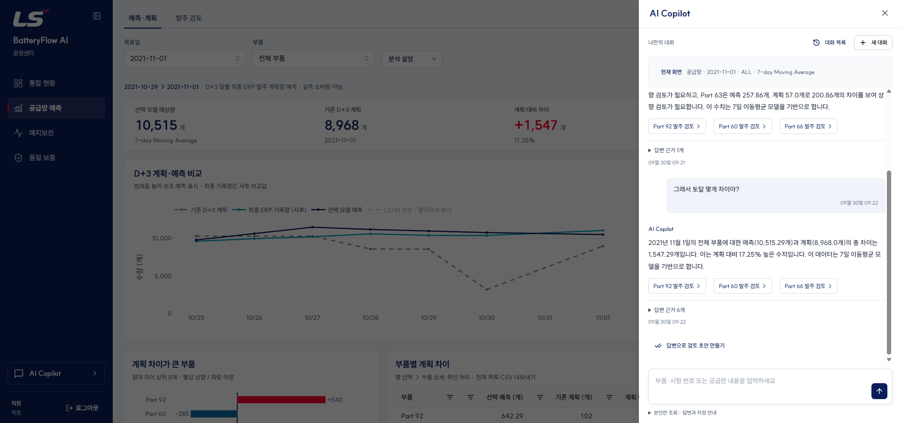
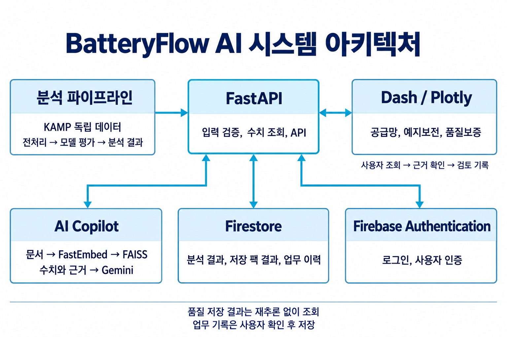

Case Study
BatteryFlow AI
예측의 성능부터,
결과를 쓰는 방법까지.

01 정답과 시간 경계를 먼저 확인했습니다.
동일 부품·시각의 수량 충돌을 분리하고, 예측 당시 알 수 있는 데이터만 학습에 포함했습니다.
02 비교 결과에 맞게 모델의 역할을 정했습니다.
| 방법 | MAE (개) | 역할 |
|---|---|---|
| 7일 이동평균 | 34.7 | 검토 기준선 |
| LSTM | 35.2 | 학습형 보조 |
| 기존 D+3 계획 | 54.8 | 비교 대상 |
전체 CV에서 7일 평균의 MAE는 기존 계획보다 36.7% 낮았지만, 목표일 단위 bootstrap 95% 구간(−13.6%~59.2%)이 0을 포함했습니다. 첫 구간을 제외하면 오차가 기존 계획보다 16.4% 컸습니다.
기간에 따라 결과가 달라, 최근 패턴과 크게 다른 계획을 찾는 검토 기준선으로 사용했습니다. 기존 계획과 나란히 제시해 담당자가 변경 이유를 확인하도록 구성했습니다.
LSTM을 학습형 보조 모델로 유지하자고 제안했습니다.49일의 관측과 3일 입력에서 학습형 후보 중 가장 낮은 MAE를 보였습니다. 추가 데이터와 더 긴 입력 기간의 효과는 새 기간에서 트리 모델과 함께 검증할 가설입니다.
03 Copilot의 수치와 순위는 서버에서 확정했습니다.
“계획과 차이가 큰 부품 3개”라는 질문에 증가 부품 위주로 답하고 감소 부품을 누락했습니다. 키워드 존재만 확인하던 테스트도 이 오류를 놓쳤습니다.
공식 수치 조회와 문서 검색을 분리하고, 차이 절댓값 내림차순 → 동률이면 부품 번호 오름차순으로 서버가 순위와 최종 수치 문장을 확정하도록 바꿨습니다.
2021-11-01 기준 · 차이 단위: 개
분석에서 서비스까지
- CSV 입력
- FastAPI 추론
- Dash 계획 비교
- 검토 기록
학습·추론의 특징 생성 규칙을 공유하고, 입력 검증과 데이터 버전·동시 수정 확인을 연결했습니다.
팀 역할과 개발 방식
김유빈: 공급망 분석, 발주량 예측, FastAPI 백엔드, Dash 구현·통합, AI Copilot.
유현경: 예지보전과 디자인.
최우찬: 품질보증과 Firestore.
각자의 분석 결과와 화면을 통합 브랜치에서 연결했습니다. 팀 개발 이후에는 개인 포트폴리오 정리와 개인 Firebase 환경 이전, Cloud Run 배포 작업을 진행했습니다.
구현 초안과 수정에는 생성형 AI를 활용했습니다. 시간 경계, 정렬 규칙, 실패 사례를 구체적인 조건으로 만들고 코드·저장 예측·회귀 테스트로 확인했습니다.
분석 범위와 한계
- 관측일 49일: 장기 계절성과 새 기간의 안정성은 추가 데이터로 평가할 과제입니다.
- 예측 대상은 일별 최종 ERP 발주 계획량: 실제 소비량과 구분하며 계획 검토를 지원합니다.
- 마지막 7개 목표일은 회고 평가: 최종 정책의 독립 시험은 새로운 기간에서 수행할 계획입니다.
검증 근거
충돌 306개 그룹·612행을 보존하고 Part 21·26을 격리했습니다. 0은 유지하고, 누락 날짜를 0으로 채우지 않았습니다. 학습 정답의 마지막 날짜가 다음 검증의 첫 예측 기준일보다 앞서는지 검사했습니다.
일별 자료 5,380행·115개 부품 중 CV는 1,289행·112개 부품·12개 목표일입니다. Part 45·109·111은 CV 목표 기간에 정답 관측이 없어 평가에서 제외했습니다.
신뢰구간은 같은 목표일의 예측을 묶은 paired cluster bootstrap 20,000회로 계산했습니다. Part 60·66은 반올림 전에도 동률이며, 입력 순서 변경과 상위 3개 경계 동률을 검사했습니다.
서비스 화면과 시스템 구성

